- Results in Table 1 on synthetic PERSONA-Val dataset from main paper.
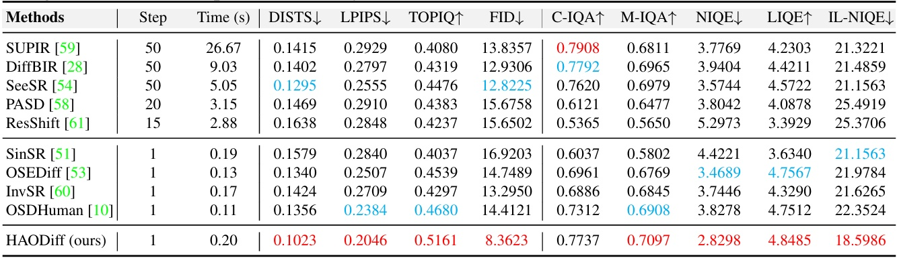
- Results in Table 2 on real-world PERSONA-Test and MPII-Test datasets from main paper.
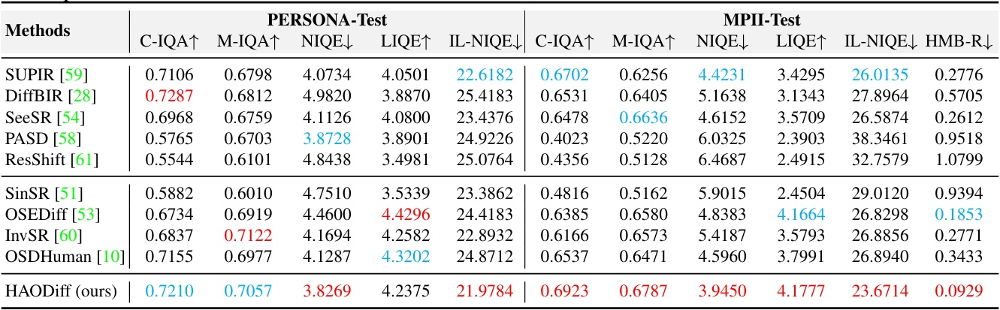
Human-centered images often suffer from severe generic degradation during transmission and are prone to human motion blur (HMB), making restoration challenging. Existing research lacks sufficient focus on these issues, as both problems often coexist in practice. To address this, we design a degradation pipeline that simulates the coexistence of HMB and generic noise, generating synthetic degraded data to train our proposed HAODiff, a human-aware one-step diffusion. Specifically, we propose a triple-branch dual-prompt guidance (DPG), which leverages high-quality images, residual noise (LQ minus HQ), and HMB segmentation masks as training targets. It produces a positive-negative prompt pair for classifier-free guidance (CFG) in a single diffusion step. The resulting adaptive dual prompts let HAODiff exploit CFG more effectively, boosting robustness against diverse degradations. For fair evaluation, we introduce MPII-Test, a benchmark rich in combined noise and HMB cases. Extensive experiments show that our HAODiff surpasses existing state-of-the-art (SOTA) methods in terms of both quantitative metrics and visual quality on synthetic and real-world datasets, including our introduced MPII-Test.
We propose HAODiff, a human-aware one-step diffusion model for human body restoration. The degradation pipeline simulates the coexistence of human motion blur and generic noise to build synthetic training pairs. A triple-branch dual-prompt guidance (DPG) is designed, which uses high-quality images, residual noise (LQ minus HQ), and HMB segmentation masks as supervision signals to learn adaptive positive and negative prompts. These prompts are then used within classifier-free guidance in a single diffusion step, enabling HAODiff to robustly handle diverse degradations while preserving human details.
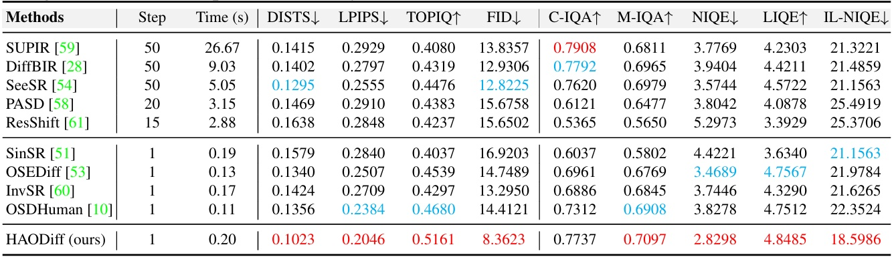
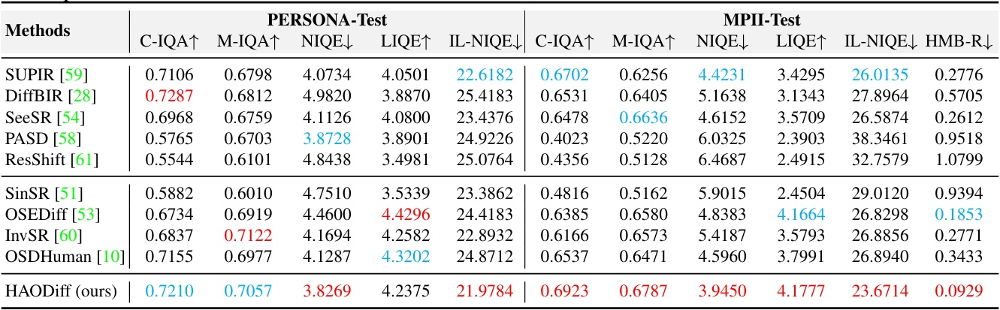
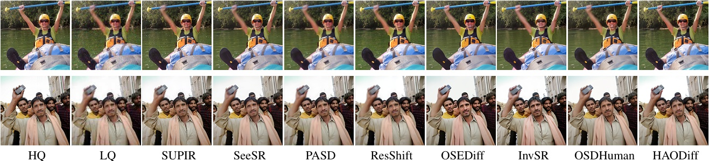
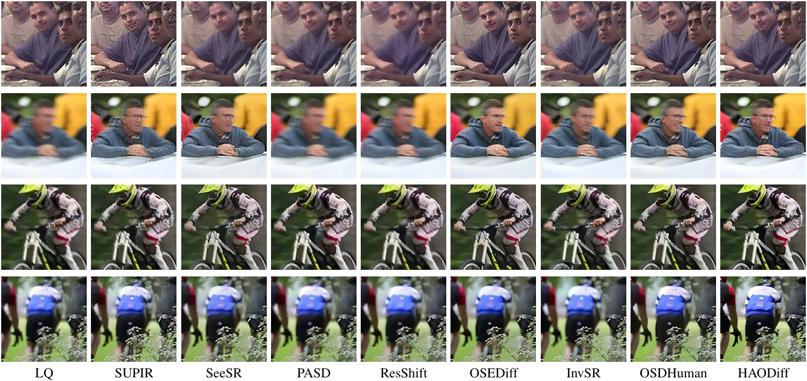
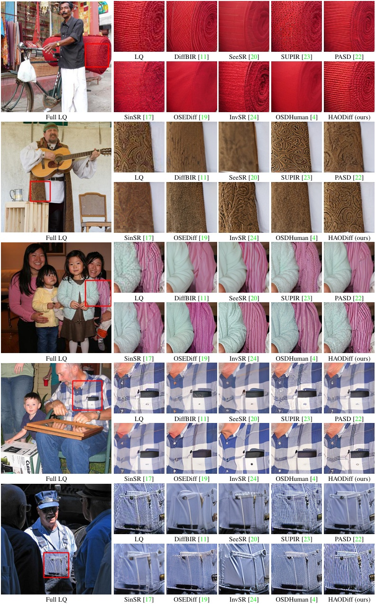
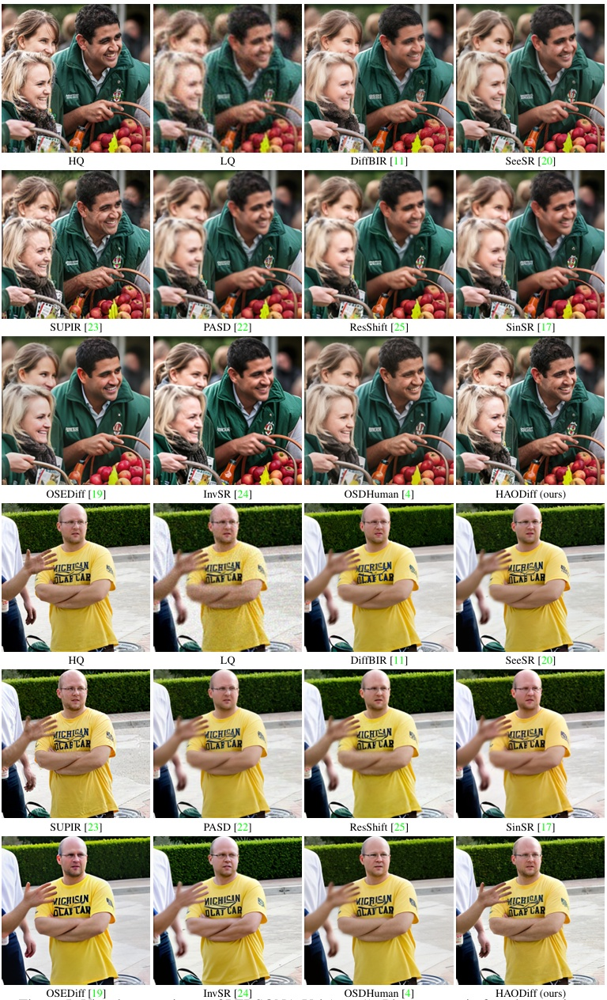 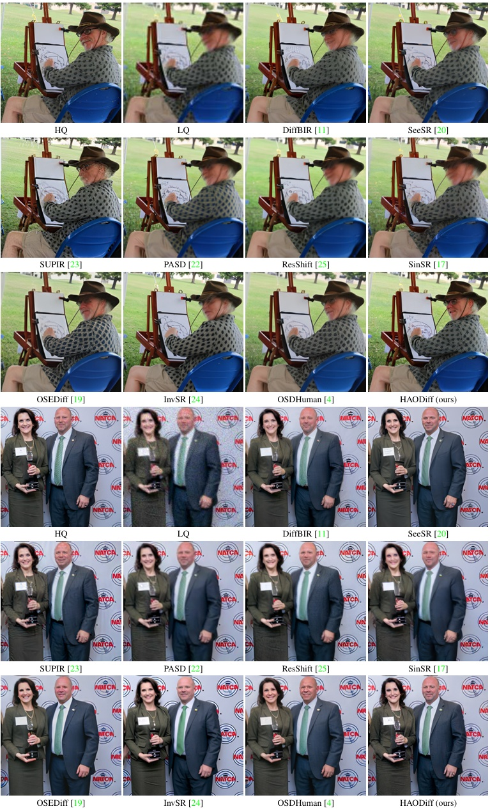
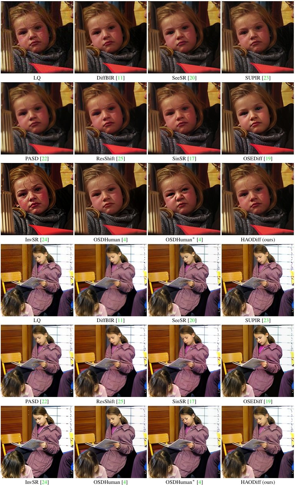 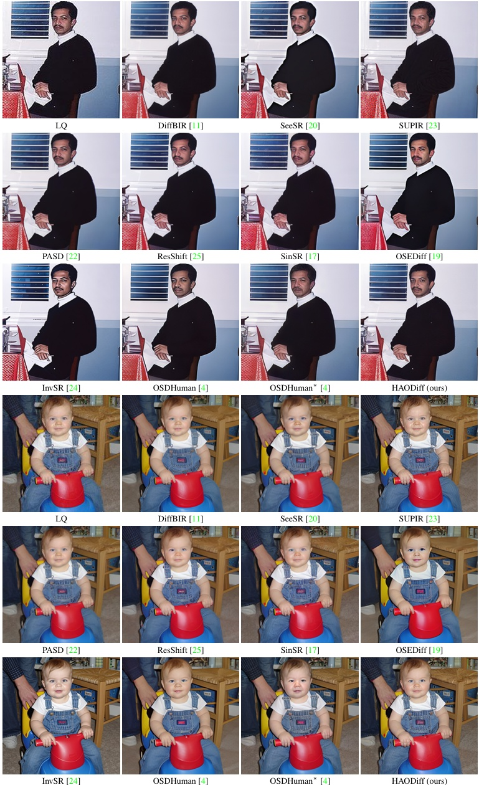 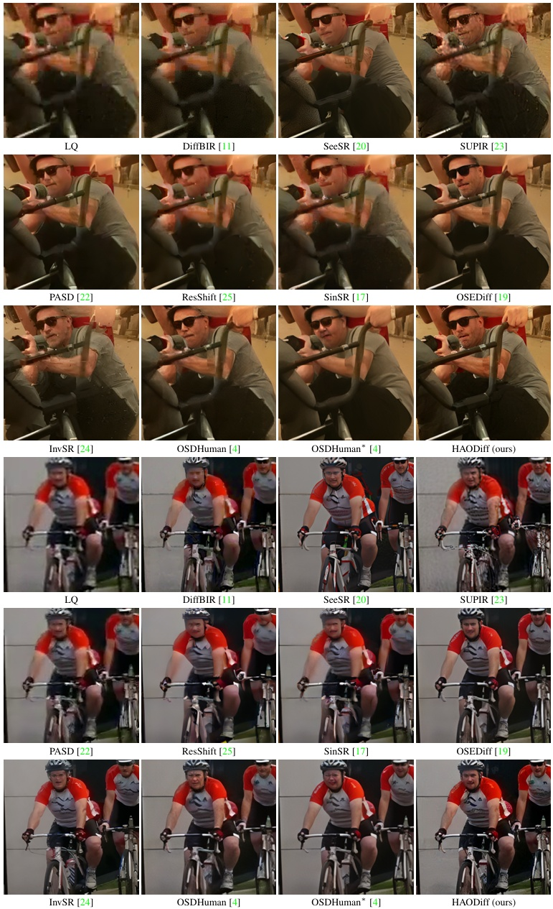 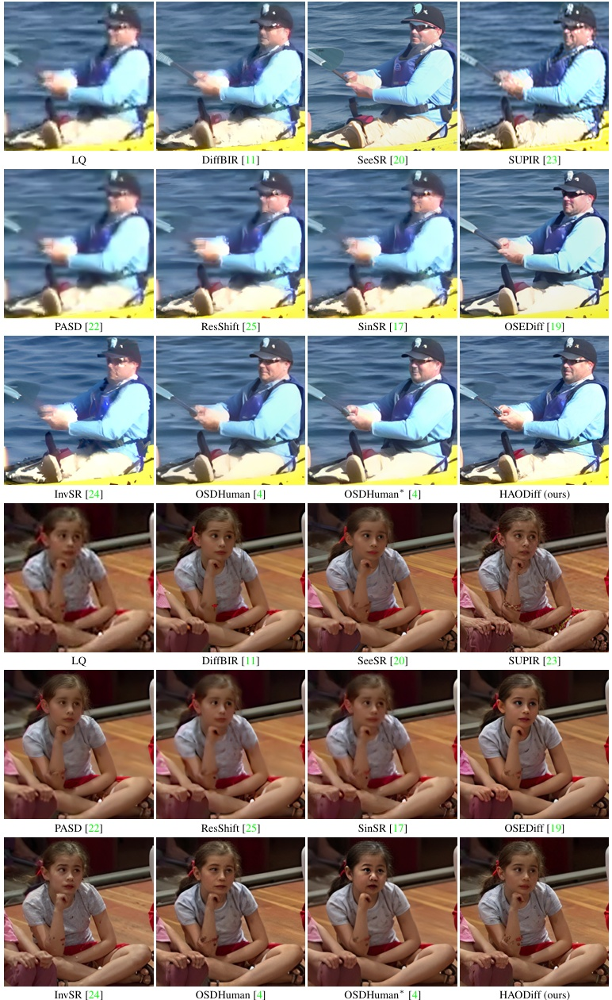
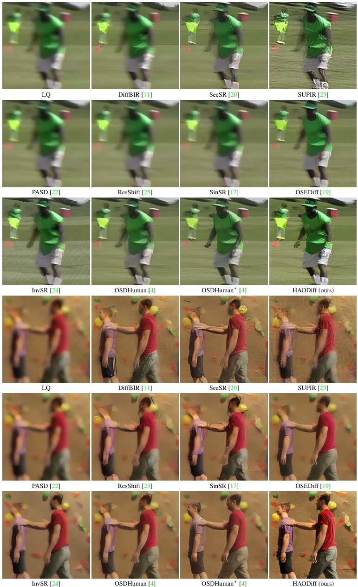 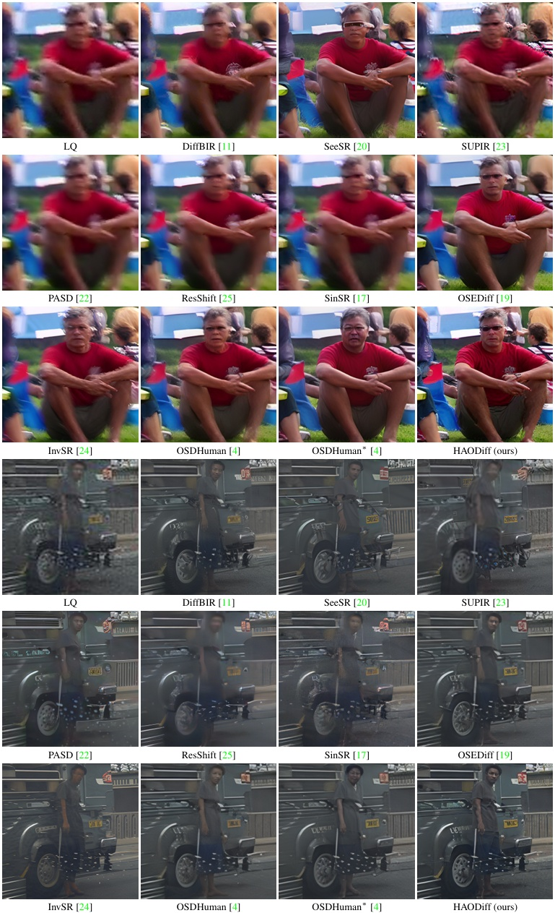
@inproceedings{gong2025haodiff,
title={{HAODiff}: Human-Aware One-Step Diffusion via Dual-Prompt Guidance},
author={Gong, Jue and Yang, Tingyu and Wang, Jingkai and Chen, Zheng and Liu, Xing and Gu, Hong and Liu, Yutong and Zhang, Yulun and Yang, Xiaokang},
booktitle={NeurIPS},
year={2025}
}